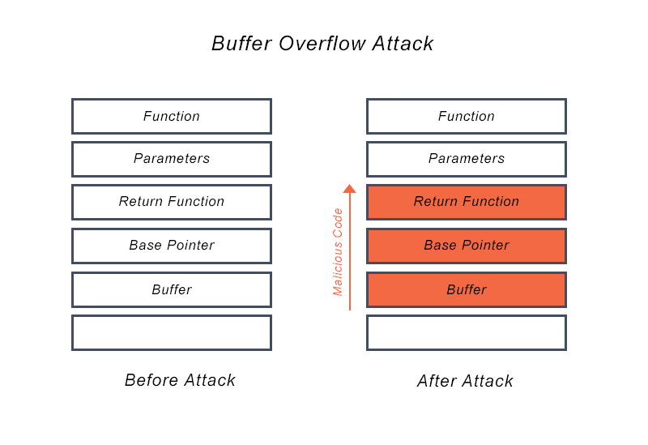

The project revolved around delving into the intricacies of cybersecurity, with a particular focus on shellcode, vulnerability analysis, and countermeasures. The primary objective was to gain a practical understanding of security concepts through hands-on tasks, including creating and executing 32-bit and 64-bit binaries, identifying vulnerabilities in programs, and experimenting with various exploitation techniques.
As the sole participant in the project, I took on the responsibilities of executing the provided binaries, modifying code, and launching attacks on vulnerable programs. My role encompassed the entire process, from adjusting exploit script parameters to understanding the nuances of buffer offsets and return addresses. I actively engaged in the compilation of code, the exploration of SET-UID programs, and the analysis of address randomization effects on system security. Throughout the project, I maintained sole ownership of the tasks, ensuring their successful execution and documenting observations.
This lab provided me with a comprehensive learning experience, offering practical insights into the world of cybersecurity. The hands-on exploration of shellcode, vulnerability exploitation, and countermeasures significantly enhanced my practical understanding of security concepts. The project not only showcased the intricacies of identifying and exploiting vulnerabilities but also underscored the importance of meticulous analysis and adaptability in the rapidly evolving field of cybersecurity. The experience solidified the notion that continuous learning is essential in staying updated on new vulnerabilities and defense mechanisms which contribute to a well-rounded understanding of cybersecurity principles.
Lab Report: Buffer Overflow Attack Lab.